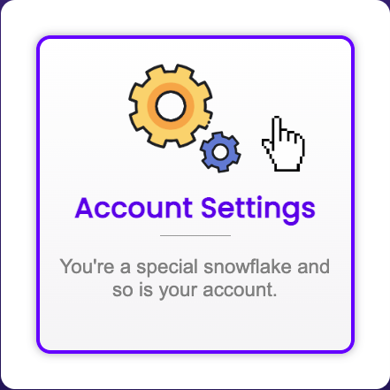
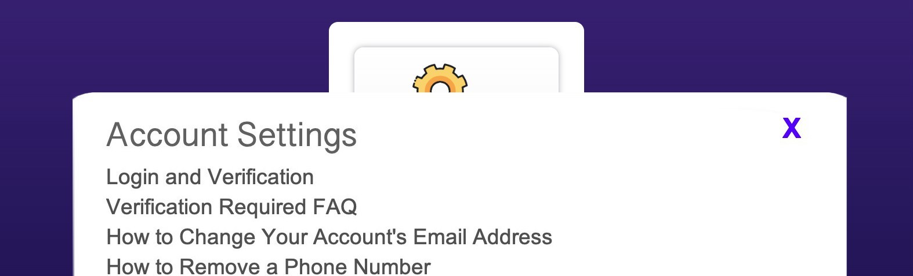
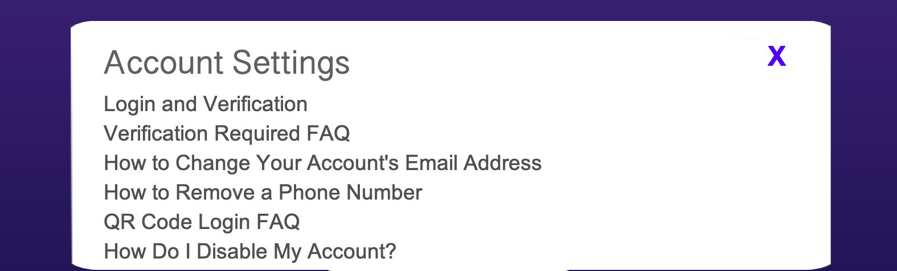

New microinteraction
Triggers
- Hover on Account Settings block.
- Hover off Account Settings block.
- Click on Account Settings Block
- Click on X button
Rules
Hover on/off
- Pointer turns to standard hand icon.
- Blue-purple border fades in around the block, growing from 1 - 5 pixel width in .4 seconds.
- Two cogs rotate, yellow spins 180 degrees clockwise, purple cog spins 180 degrees counter-clockwise. The rotation speed starts fasts and slows down as the animation plays through the full .4 second length.
- On hover off, cogs rotate another 180 degrees in the opposite direction as on hover, and border fades back to 0 width.
Click
- Cogs rotate another 180 degrees in the opposite direction as on hover, and border fades back to 0 width.
- After border is gone, large mode with account settings page information rises from the bottom of the screen, ease out.
- Mode can be closed by clicking the X button in upper right corner.
Feedback
Hover on/off
- Pointer turns to standard hand icon.
- Blue-purple border fades in around the block, growing from 1 - 5 pixel width in .4 seconds.
- Two cogs rotate, yellow spins 180 degrees clockwise, purple cog spins 180 degrees counter-clockwise. The rotation speed starts fasts and slows down as the animation plays through the full .4 second length.
- On hover off, cogs rotate another 180 degrees in the opposite direction as on hover, and border fades back to 0 width.
Click
- cogs rotate another 180 degrees in the opposite direction as on hover, and border fades back to 0 width.
- After border is gone, large white box with account settings page information rises from the bottom of the screen, ease out.
- Settings page box can be closed by clicking the X button in upper right corner.
Loops/Modes
- The settings page information box is a mode that appears when the Account Settings button is clicked.
Demo Images
Hover on/off

Click

